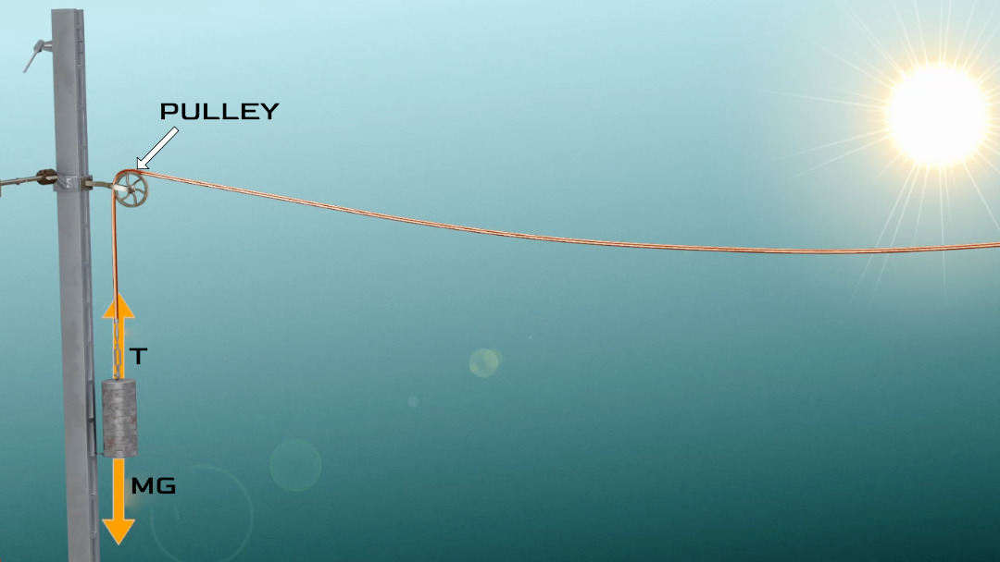
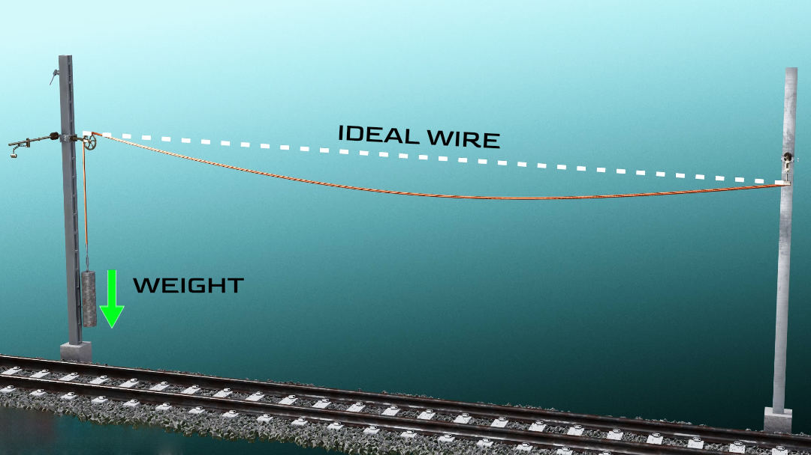
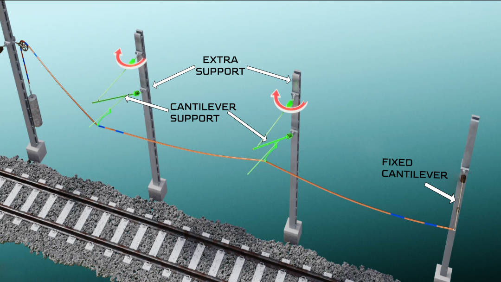
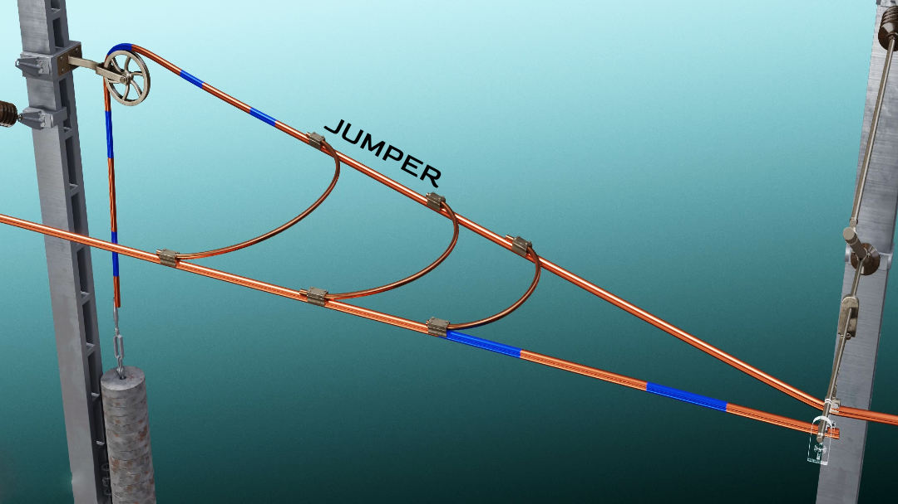
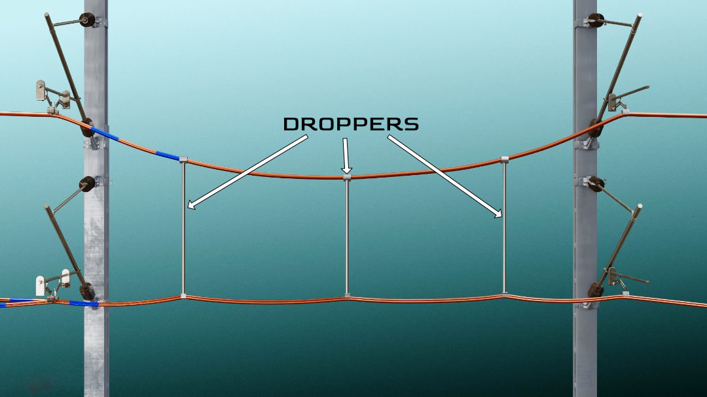
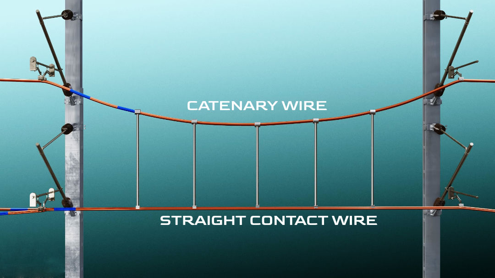
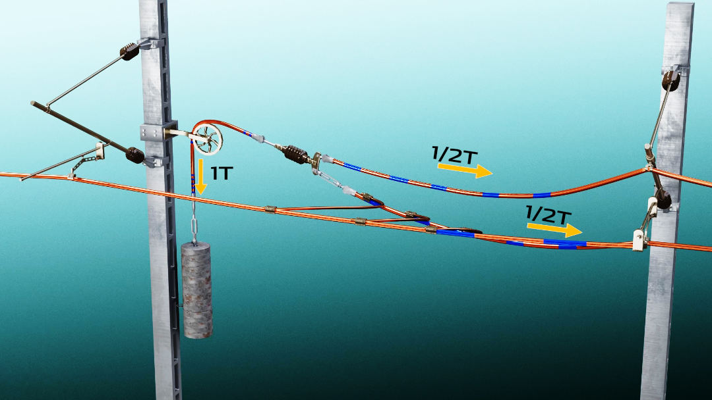
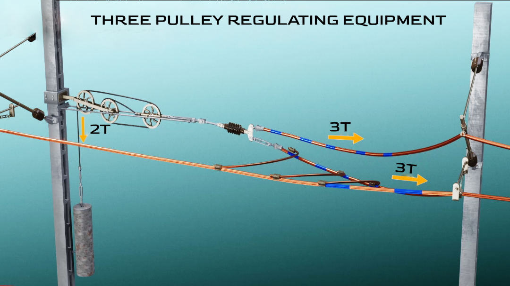
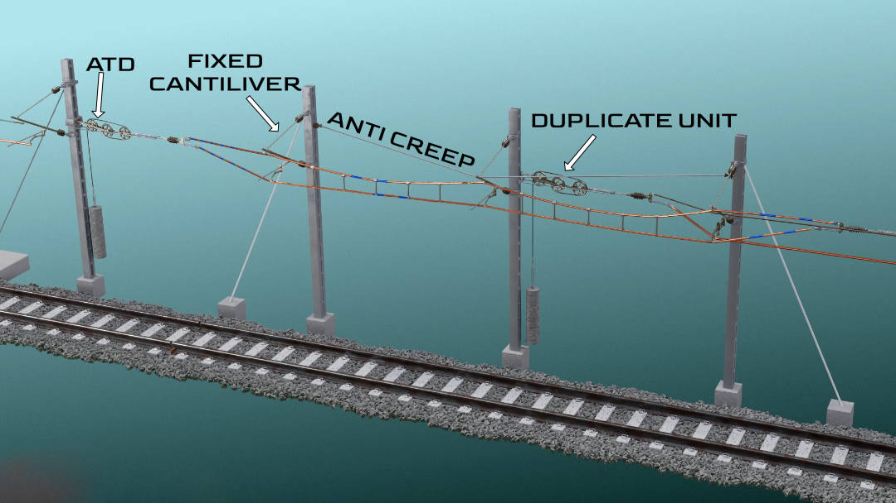
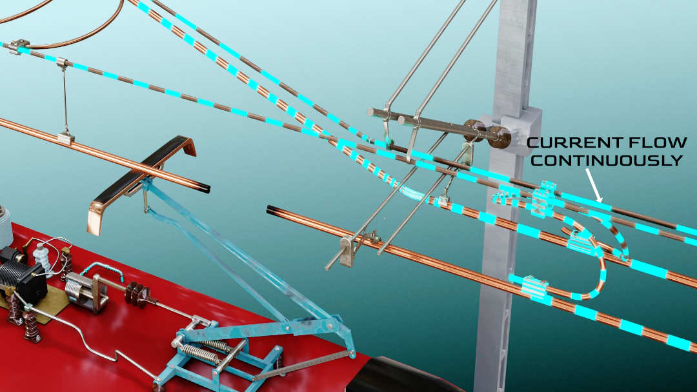

Whenever you travel in the train you might have seen hanging weights near the poles and a strange connection of wires near to them. What exactly are they? Why couldn’t they just use a simple conductive wire arrangement similar to the normal power transmission system? Let’s explore this topic in detail.
Railway power lines
Let's consider a simple case where both ends of the contact wire are fixed as shown in fig 1. In this design, temperature variations will cause big problems. Let's consider a simple case where both ends of the contact wire are fixed. In this design, temperature variations will cause big problems. In the summertime, as the temperature increases, the material will expand. Since the ends are fixed, this will result in sagging of the wire, and sagging wires are free to deform. Due to this the wire will go for wave kind of movement, there is a chance of sparks being produced, and the pantograph may even get stuck.

Maybe I can tighten these wires too much so that I can reduce the sagging in the summer. However, this wire will break during the winter as the material contracts. Now it is clear why fixing a wire at both ends is not a good idea. An ideal overhead equipment setup should always keep the contact wire perfectly straight without breaking the wire. Let’s see how we can achieve this.
Designing a simple auto tensioning device
First, I must design a simple system to take care of this expansion and contraction problem. In this design, I am replacing a fixed connection with a pulley as I have shown in fig 2.
When I attach a dead weight to this free end, the wire sag will be greatly reduced. Here tension in the wire is the same as the weight of the discs. This arrangement will compensate for any temperature change. The more the temperature increases, the more the weight will pull down. With this pulley and weight arrangement, if I increase the distance between the poles, then the concrete weights reduce the sag of the wire but they can never completely eliminate the sag(refer fig 3).
Especially when the span is too large, even with a good amount of disc weight, the sag will be considerable. This means that if I want a perfect straight line, I have to have an infinite amount of weight at the pulley side. Due to this, the maximum distance allowed between the poles is around 50 metres. To reduce the sag we need to introduce more support in between the poles with an extended cantilever. They should be able to swing as shown with an arrow in fig 4, such that when the temperature variations occur, they will not block the movement of the wire.
However, the last cantilever is fixed. I have developed a small wire unit or overhead equipment for the electric train. Now, it's time to achieve a long OHE system starting from this design. For this just duplicate this entire unit and start this new unit before the first unit ends. To maintain the electrical continuity between these units, a few flexible jumper wires are used(refer fig 5). The jumper wires electrically connect the first and second unit. Now, I can run our electric train successfully in this system.
Catenary wire system
Still, the contact wires sagged a little bit. The disc weight and supports with swing arms could not solve the sag problem completely. Can you think of a solution to fix this issue once and for all? I will give you one clue. The almost perfect straight line can be achieved with the help of one more pulley-wire system, which is placed slightly above the current contact wire (refer fig 6). Can you spot the solution now? It’s relatively simple. These two wires have the exact same shape now. If I take a connecting wire called a dropper, which has the same length as the distance between the wires, nothing will happen to their shape.
However, what would happen if I connect the wires using a dropper of a varying length? The shorter dropper will obviously pull the contact wire up, while pulling the upper wire down as I have shown in fig 7. In short, the sag of the upper wire will increase, and while the bottom wire will have a perfect zero sag at this point. The upper wire is called catenary and the lower wire is obviously the contact wire. By adding more droppers, the contact wire will become even straighter.
These droppers also absorb vibrations arising from the interaction between the pantograph and the contact wire. I can simplify this system by attaching the ends of both wires to the common pulley (refer fig 8). But the tension in the wires is not the same.
Does this mean we need to add more weights? Obviously, this is not a good idea. Let’s implement a clever pulley arrangement shown in fig 9. This arrangement provides an immense mechanical advantage. A two-newton force at the pulley gives three newtons of tension in each wire. Now, the contact wire is almost straight.
With this system, the pantograph always remains in contact with the contact wire. Till now we have seen that the ATD is attached at one end and the other end is fixed. We have to duplicate this simple unit to achieve a long OHE. However, before duplicating, if I mirror this simple design, the whole design will be much simpler. This is the final OHE design as you can see in fig 10.
Catenary wires are kept at the same voltage as the contact wires. Otherwise, there will be current flow via the droppers and unnecessary energy loss. Additionally, if there is any damage in the contact wire, the system will not fail. The current is passing through the catenary wire.
This means the power will be supplied by the catenary wire through jumpers.
That's it! I hope you enjoyed this article. Thanks for reading.